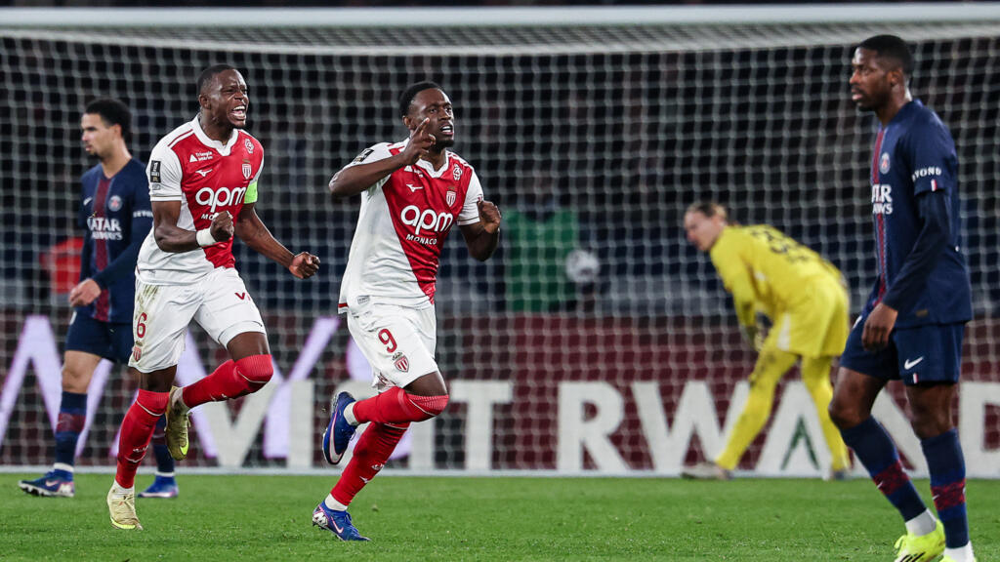

Une équipe Parisienne usée

Le PSG commence la saison par 4 succès d'affilées en championnat dont une victoire 6-3 face à Toulouse. Ensuite, il y a eu le classico perdu le soir du sacre d'Ousmane Dembélé en tant que Ballon d'or 2025 donc un classico avec une ambiance particulière. sans suit 7 victoires, 3 nuls et 1 défaites en championnat avec en plus une qualification en 1/16ème de coupe nationale avant la trêve hivernale. Au retour, de la trêve hivernale les parisiens affronte et gagne le Paris FC en championnat puis remporte le premier trophée de l'année face à Marseille aux tir aux buts. Après ce premier trophée de l'année, les Parisiens retrouve le Paris FC au Parc pour le 1/8ème de coupe de france malgré une domination totale toute la partie; Le PSG se fait sortir de la compétition 2-1 face au Paris FC.
Un Champion d'Europe à deux visages


Après une victoire en supercoupe d'Europe face à Tottenham au Tir au But, Paris fais son retour en ligue des champions après son sacre la saison dernière et elle commence très bien avec 3 victoire dont une retentissente contre le Bayer Leverkusen 7-2 en Allemagne. L'europe est prévenue; Paris est de retour pour continuer à écrire l'histoire mais malheureusement ils vont se heurtés à la machine Bavaroise. Puis, les Parisiens finissent la phase de ligue avec 2 victoires et 2 nuls en ligue des champions pour une qualification en Barrage face à Monaco. Lors du match de Barrage face à Monaco, on a vu un PSG en difficulté au match aller comme au retour mais qui a réussi à se hisser en 1/8ème de finale face à Chelsea. lors du 1/8ème Paris explose Chelsea sur les 2 matchs 5-2 au Parc des Princes et 3-0 à Standford Bridge, et s'est autour de Liverpool de ce frotter au PSG lors dès 1/4 de finale de la Champions League